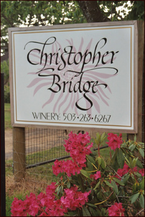
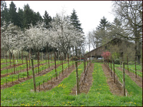

Winery & Tasting Room
Please visit our tasting room by appointment or refer to our Events page for hours of operation and special events.
Getting to Christopher Bridge Cellars
Christopher Bridge Cellars is physically located south of Oregon City in
Clackamas County.
12770 S. Casto Road
Oregon City, OR 97045

Directions from North – Portland/Oregon City:
- Take Interstate 5 and/or I-205 to Exit 10 – Parkplace
- Turn right on OR 213 and drive 8.2 miles
- Turn right on S. Spangler Rd. and drive 1.2 miles to curve where S. Casto Rd. begins
- Continue on S. Casto Rd. 0.4 miles to 12770 S. Casto Rd. on left
Directions from South – Silverton/Salem:
- Take Cascade Hwy./OR 213 north and drive 21.6 miles
- Turn left on S. Spangler Rd. and drive 1.2 miles to curve where S. Casto Rd. begins
- Continue on S. Casto Rd. 0.4 miles to 12770 S. Casto Rd. on left
Directions from East – Mt. Hood/Government Camp:
- Take US 26 West and drive 32 miles from Mt. Hood Skibowl
- Turn right on OR 212 ramp to Boring/Oregon City
- Turn right on top of ramp and continue on OR 212 through Boring and Damascus to Clackamas/Interstate 205
- Turn left on I 205 and drive 2.4 miles
- Take exit 10/Parkplace and continue to OR 213/Veterans Memorial Hwy.
- Drive 8.4 miles to intersection with S. Spangler Rd.; turn right
- Drive 1.2 miles to beginning of S. Casto Rd.
- Go .4 miles to 12770 S. Casto Rd. on left

Directions from West – Newberg:
- Take OR 219 and drive 4.3 miles
- Turn left at McKay Rd. NE and drive 3.4 miles (McKay becomes Yergen R.)
- Continue on Yergen Rd. NE for 1.0 mile (Yergen becomes Ehlen Rd. NE)
- Turn slight left at Ehlen Rd. NE and drive 5.2 miles
- Turn slight right at First Street /Main St. NE and drive 0.1 mile
- Make a sharp left turn at OR 99E and drive 3.9 miles to Canby
Directions (from 99E South) through Canby:
- Turn right at S. Ivy St. (7-Eleven) and drive .2 miles
- Turn left on SE Township Rd. and drive 3 miles
- Turn left on S. Central Pt. Rd. and drive 0.5 miles
- Turn right on S.Carus Rd. and drive 0.4 miles
- Turn right on S.Casto Rd. and continue 1.1 miles uphill to 12770 S. Casto Rd. on right